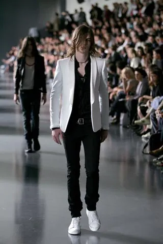
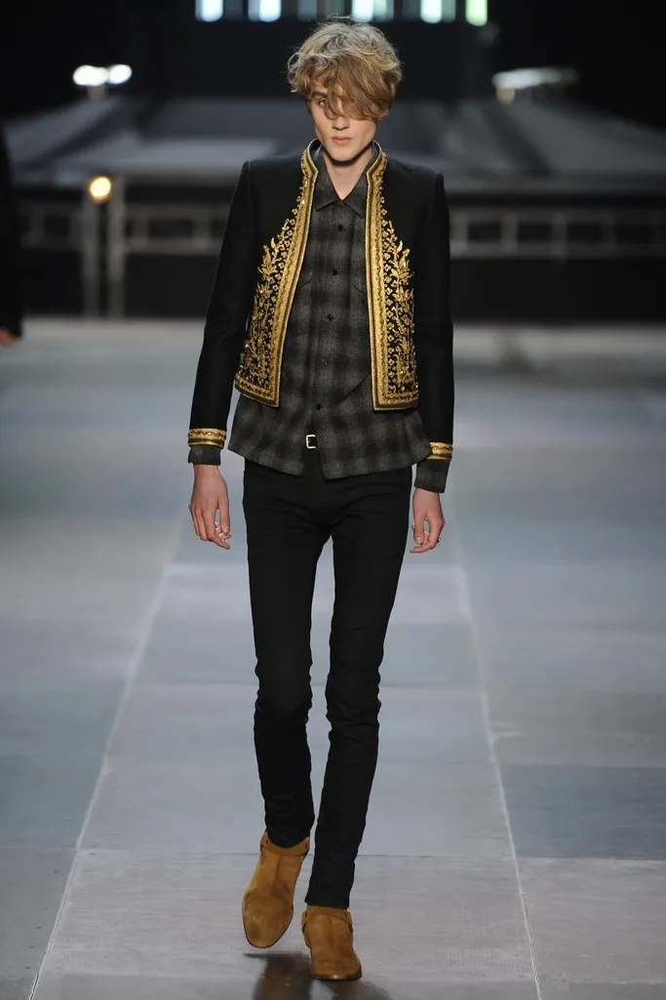
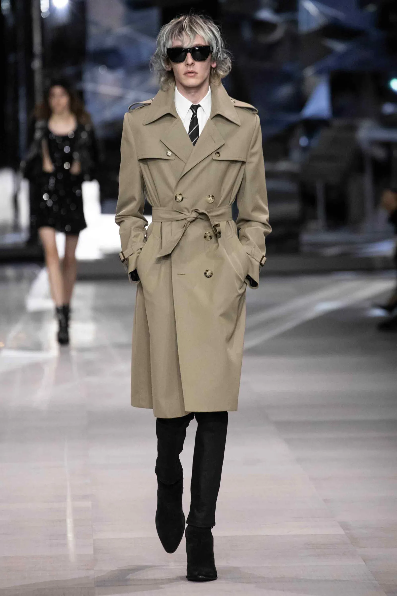

HEDI SLIMANE ARCHIVE
Dior Homme 2000-2007
Hedi Slimane established his trademark modern, slim silhouette as the head of Christian Dior's menswear line.
Yves Saint Laurent 2012-2016
Slimane embraces the 'rockstar' look with his transition to Saint Laurent.
Celine 2018-2024
Hedi Slimane brought an established look to a fashion house that didn't offer menswear until his arrival.



- Despite being known for his slim looks and sharp tailoring, Slimane has no formal fashion training.
- Hedi Slimane has drawn numerous comparisons to Yves Saint Laurent for his attention to detail, and bringing fresh ideas to otherwise boring menswear.
Visit Hedi Slimane's website for further insight on his creative process!